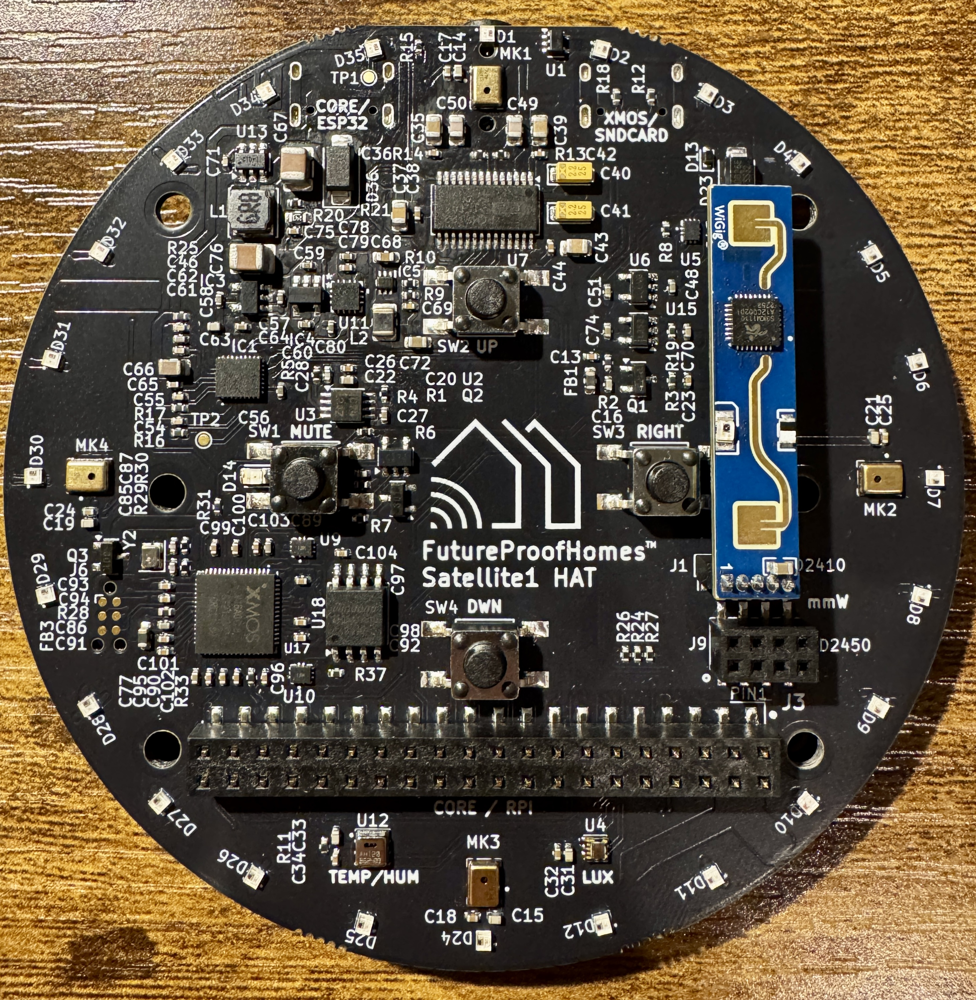
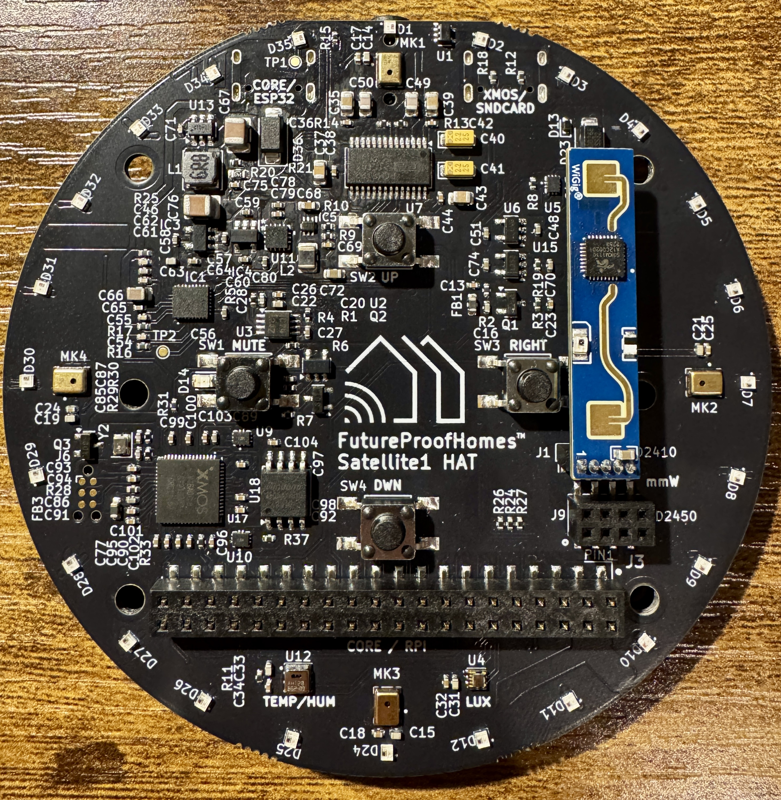
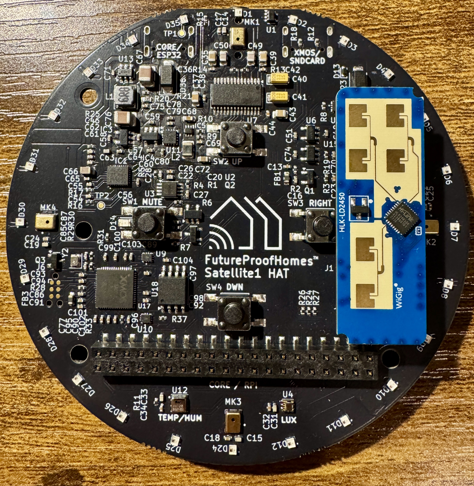

Adding Presence Sensors
The Satellite1 HAT has two ports for optionally mounting either the LD2410 or LD2450 mmWave human presence detecting radar sensors. These sensors have different possibilities, and suit different needs. Depending on the sensor your choose you must flash the appropriate firmware to the Satellite1 using a USB-C cable.
Flash your appropriate mmWave firmware
-
LD2410 mmWave module
 
This is small, but powerful sensor. It can sense motion and still human presence for distances up to 6 meters. It has a detection angle +/-60 degrees, and should be fine-tuned for best performance. Also it can see through glass walls, thin plywood etc.

This is small, but powerful sensor. It can sense motion and still human presence for distances up to 6 meters. It has a detection angle +/-60 degrees, and should be fine-tuned for best performance. Also it can see through glass walls, thin plywood etc.The LD2410(B) has bluetooth capabilities which helps update the radar's firmware, while the standard LD2410 does not have bluetooth. The Sat1 is compatible with both.
-
LD2450 mmWave module
 This is physically bigger and even more powerful presence sensor. It can track the motion for 3 moving occupants in the room while also detecting still human presence for distances up to 8 meters. It has a detection angle +/-60 degrees, and should be fine-tuned for best performance. Also it can see through glass walls, thin plywood etc.
The LD2450 must be running firmware version V2.02.23090617 to work with ESPHome. Learn how to update the firmware by reading here.
{kind=link}
{kind=link}
{kind=link}
Sensor Positioning
When the sensor is directly mounted to the Dev Kit it will point in the direction of the microphone and LEDs, which may work for your situation. However, as a Dev Kit you can always fashion cables that allow you to position the sensor in any orientation you'd like.
We're working on better solutions for mmWave mounting in the future, one of which is our upcoming PoE Shoe module.
Cylindrical Enclosure Fits mmWave
Currently only our Cylendrical Enclosure fits mmWave sensors mounted directly to the Hat.
Understanding mmWave
- Gate: these sensors use a "gate" as definition of distance range. This is some range of distance, which can be tuned separately from others. Think of it as of "onion" layer, with center on sensor. There are 8 gates on LD2410 (plus gate 0, but it's effectively useless).
- Distance Resolution: the "thickness" of one gate. The LD2410 can have resolution of 75cm or 20cm per gate. With resolution of 75cm per gate, maximum distance is
0.75 * 8 =6 meters (sorry my Imperial-units-friends), while with 20cm it's 1.6 meters. But with latter you can achieve much better precision. - Energy: basically "amount of presence" in the gate. The more actively you're moving - the more will energy there will be.
Configuration
Don't be overwhelmed with several dozens new entities that appeared after installation. They all are useful, and after fine-tuning the sensor you can disable those you not need. Let's familarize ourselves with some useful entities:
- Binary sensors:
- Moving target - sensor of moving target presence.
- Still target - still presemce sensor. Mostly off, when moving target is present.
- Presence - main presence sensor. Populated by other two, with cooldown (see Timeout below).
- Sensors:
- Moving/still distance - sensors of the distance to corresponding target.
- G(1-8) moving/still energy - the value of energy for corresponding gate.
- Switches:
- Engineering mode - this switch will enable fine-tuning for sensor, and will report its readings to each gate in real time. Keep it off when not setting up your sensor, as it is pretty extensive operation.
- Control Bluetooth - enables built-in Bluetooth on sensor, so you could connect to it with HLK application and set it up from there. Useful, if you want to upgrade sensor firmware.
- Select:
- Distance resolution - you can choose gate length 0.75m or 0.2m
- Numbers:
- Timeout - will set the cooldown period for sensor (time from last presence detected to main presence sensor switching into "off" state).
- Max moving/still distance gate - will restrict sensor to certail distance. E.g. if it's set to 6, and distance resolution is 0.75 - max sensor triggering distance will be 4.5 meters.
- G(1-8) moving/still threshold - this setting will set the threshold for presence detection for each gate (movement or still presence respectively). If amoung of energy for corresponding gate will be greater than this threshold - sensor will feel presence in that gate.
Calibration
The idea is simple:
- Set sensor in place, where its 120 degrees will be most useful, and catch the least of unnecessary movement.
- Turn on Engineering mode switch.
Sensor Placement
- It works the best in the room corner, opposite to a table, or on the short wall of long room (e.g. bathroom). This is especially convenient, if you have shower with glass door on the opposite end.
- It won't work in rooms with fans, or when it has dishwasher, or even running water in sight.
- Set the maximum gate based on room length. If you struggle with correct number, just wave hands or jump in opposite corner, see which gate detects movement, and set that number to Max moving/still distance gate. (Don't hesitate, set threshold a bit higher - that energy values can jump!)
- And finally, calibrate it for no presence: step out, let it set down for a bit (like a minute), and adjust moving and still thresholds, so they would be higher than energy levels for corresponding gates.
Helpful Calibration Card
We built UI card, to make calibration process more intuitive.

Here's how to use it:
- Install Mushroom cards, Auto-entities card, Decluttering card, Vertical Stack In Card, and Bar card from HACS.
- Put this to the very bottom of dashboard YAML in raw edit mode (this should be done once per dashboard):
decluttering_templates: ld2410: card: type: horizontal-stack cards: - type: custom:vertical-stack-in-card cards: - type: custom:mushroom-entity-card entity: switch.[[device]]_engineering_mode name: Preset edit mode icon_color: pink layout: horizontal tap_action: action: toggle hold_action: action: more-info double_tap_action: action: none - type: custom:mushroom-number-card entity: number.[[device]]_timeout name: Detection cooldown layout: horizontal display_mode: buttons - type: custom:mushroom-select-card entity: select.[[device]]_distance_resolution name: Gate resolution icon_color: green layout: horizontal - type: custom:mushroom-entity-card entity: switch.[[device]]_control_bluetooth icon_color: indigo name: Bluetooth tap_action: action: toggle hold_action: action: more-info double_tap_action: action: none - type: custom:mushroom-template-card secondary: >- {{ iif(is_state(entity, 'on'), 'Detected, ' + states('sensor.[[device]]_still_distance') + ' cm', 'Not detected') }} primary: 'Still presence' icon: mdi:motion-sensor entity: binary_sensor.[[device]]_still_target icon_color: '{% if(is_state(entity, "on")) %} red {% endif %}' layout: horizontal multiline_secondary: false - type: custom:mushroom-template-card secondary: >- {{ iif(is_state(entity, 'on'), 'Detected, ' + states('sensor.[[device]]_moving_distance') + ' cm', 'Not detected') }} primary: 'Moving presence' icon: mdi:motion-sensor entity: binary_sensor.[[device]]_moving_target icon_color: '{% if(is_state(entity, "on")) %} red {% endif %}' layout: horizontal multiline_secondary: false title: 'Settings: common' - type: custom:decluttering-card template: ld2410_gates variables: - device: '[[device]]' - type: still - type: custom:decluttering-card template: ld2410_gates variables: - device: '[[device]]' - type: moving ld2410_gates: card: type: custom:auto-entities filter: template: >- [ {{ dict( type='custom:mushroom-number-card', entity='number.[[device]]_max_[[type]]_distance_gate', name='Max detection gate', display_mode='buttons', icon='mdi:tape-measure', layout='horizontal', secondary_info='none', icon_color='green', ) }}, {% for i in [0, 1, 2, 3, 4, 5, 6, 7, 8] %} {{ dict( type='custom:mushroom-number-card', entity='number.[[device]]_g' + i|string + '_[[type]]_threshold', display_mode='slider', icon_type='none', primary_info='name', secondary_info='state', name='Gate ' + i|string, card_mod={ 'style': { 'mushroom-number-value-control$': { 'mushroom-slider$': '.slider { height: 24px !important;}' }, '.':'mushroom-number-value-control {height: 24px;}' } } ) }}, {{ dict( type='custom:bar-card', direction='right', columns=1, height=16, positions=dict( indicator='off', icon='off', name='off', ), entities=[ { 'entity': 'sensor.[[device]]_g' + i|string + '_[[type]]_energy', 'color': 'orange' } ] ) }}, {% endfor %} ] card_param: cards card: type: custom:vertical-stack-in-card title: 'Gates: [[type]]' - Put following card to your dashboard. Replace
devicefield value with with your satellite name, as it appears in entities IDs, likesatellite1_92fb28. Blue bars are threshold sliders. Orange bars are energy indicators. That's it! Happy building!
Updating the mmWave Radar Sensor
Both the LD2410 & LD2450 can be updated via the HLKRadarTool mobile app over bluetooth. Watch this quick video to see how to access the sensor and change the firmware version: